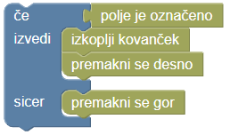
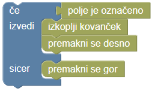

Zmajček koplje


Lačni zmajček pride do travnika, na katerem iz tal štrlijo kovanci. Pomagaj zmajčku odkopati kovance.
Če uporabiš blok ‘če/ sicer’ lahko zmajčku daš različna navodila glede na to, ali je na polju s kovancem ali ne.

Lačni zmajček pride do travnika, na katerem iz tal štrlijo kovanci. Pomagaj zmajčku odkopati kovance.
Če uporabiš blok ‘če/ sicer’ lahko zmajčku daš različna navodila glede na to, ali je na polju s kovancem ali ne.
